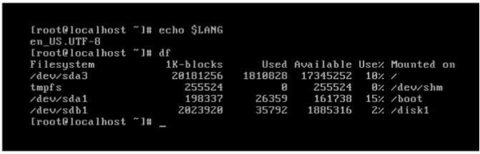
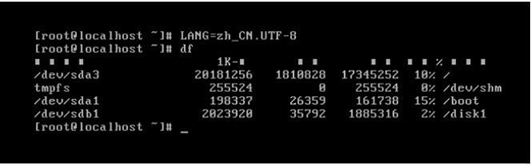

Linux LANG变量设置：定义系统的主语系环境
[root@localhost src]# echo $LANG
zh_CN.UTF-8
[root@localhost src]# locale -a | more
aa_DJ
aa_DJ.iso88591
aa_DJ.utf8
aa_ER
…省略部分输出…
#查询支持的语系
[root@localhost src]# locale -a | wc -l
735
#实在太多，这里只统计数量
[root@localhost src]# locale
LANG=zh_CN.UTF-8
LC_CTYPE="zh_CN.UTF-8"
LC_NUMERIC="zh_CN.UTF-8"
LC_TIME="zh_CN.UTF-8"
LC_COLLATE="zh_CN.UTF-8"
LC_MONETARY="zh_CN.UTF-8"
LC_MESSAGES="zh_CN.UTF-8"
LC_PAPER="zh_CN.UTF-8n
LC_NAME="zh_CN.U 丁 F-8"
LC_ADDRESS="zh_CN.UTF-8"
LC_TELEPHONE="zh_CN.UTF-8n
LC_MEASUREMENT="zh_CN.U 丁 F-8"
LC_IDENTIFICATI0N=Mzh_CN.UTF-8M
LC_ALL=
我们还要通过文件 /etc/sysconfig/i18n 定义系统的默认语系，查看一下这个文件的内容，如下：
[root@localhost src]# cat /etc/sysconfig/i18n
LANG="zh_CN.UTF-8"
如果系统重启，则会从默认语系配置文件 /etc/sysconfig/i18n 中读出语系，然后赋予变量 LANG，让这个语系生效。也就是说，LANG 变量定义的语系只对当前系统生效；要想永久生效，就要修改 /etc/sysconfig/i18n 文件。
说到这里，我们需要解释一下 Linux 中文支持的问题。是不是只要定义了语系为中文语系，如 zh_CN.UTF-8，就可以正确显示中文了呢？这要分情况，如果是在图形界面中，或者使用远程连接工具（如 SecureCRT、Xshell 等），那么，只要正确设置了语系，是可以正确显示中文的。当然，远程接工具也要配置正确的语系环境。
如果是纯字符界面（本地终端 tty1~tty6），是不能显示中文的，因为 Linux 的纯字符界面是不能显示中文这么复杂的编码的。如果非要在纯字符界面中显示中文，那么只能安装中文插件，如 zhcon 等。
举个例子，先来看看在远程连接工具中显示中文的情况，如下：
[raot@localhost src]# echo $LANG
zh_CN.UTF-8
#当前使用远程连接工具，只要语系正确，就可以正确显示中文
[root@localhost src]# df
文件系统 1K-块 已用 可用 已用％ 挂载点
/dev/sda3 19923216 1813532 17097616 10%/
tmpfs 312672 0 312672 0%/dev/shm
/dev/sda1 198337 26359 161738 15%/boot
#使用df命令可以看到中文是正常显示的

图 1 纯字符界面的语系
我们更改语系为中文，看看会出现什么情况，如图 2 所示。

图 2 纯字符界面设置中文语系
如果我们非要在纯字符界面中设置中文语系，就会出现乱码。怎么解决呢？安装 zhcon 中文插件即可解决，安装并不复杂，查询一下安装说明即可轻松安装。
关注公众号「站长严长生」，在手机上阅读所有教程，随时随地都能学习。内含一款搜索神器，免费下载全网书籍和视频。

微信扫码关注公众号